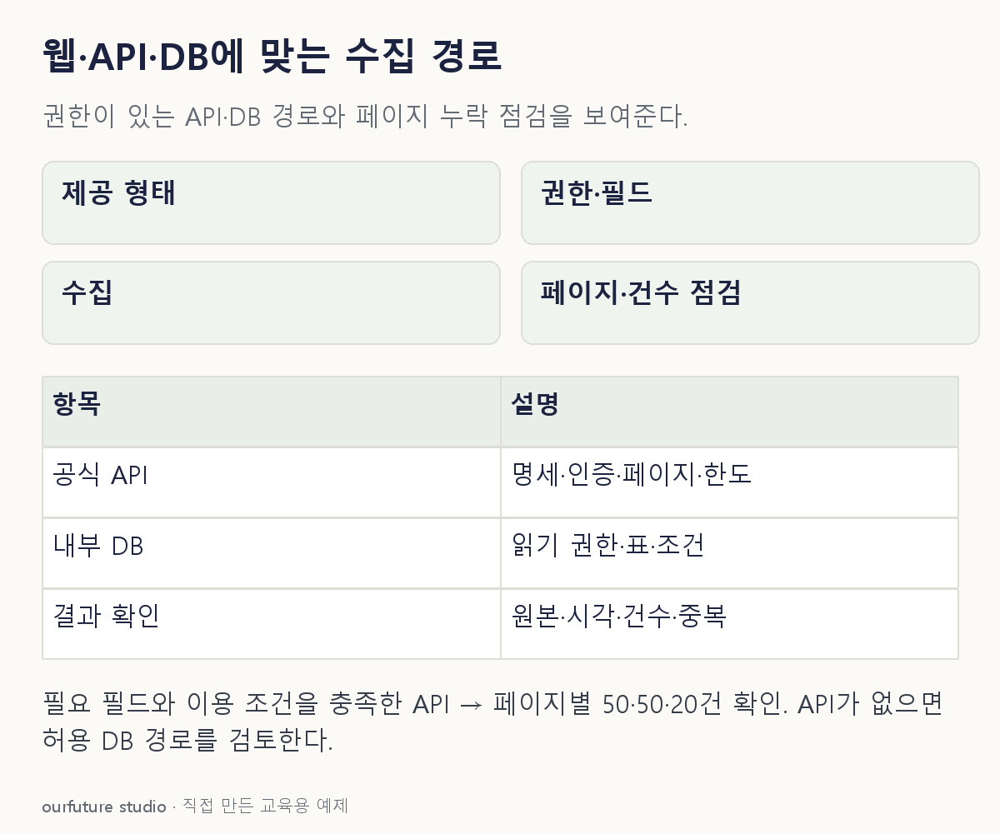

조건을 바꾸며 확인하기
실제 API 호출·DB 접속·웹 수집을 실행하지 않는다. 120건은 자체 페이지 예제다.
설명 그림과 비교하기
아래 그림과 표는 고정된 설명 예제입니다. 기본·변형 중 어떤 조건인지 캡션을 읽고, 바꾼 입력의 결과는 계산 칸에서 확인하세요.

같은 문제를 직접 골라 보기
필요한 필드를 반환하는 공식 API가 있고 이용 권한과 조건을 충족했다.
조건을 더 바꾸면?
API가 없고 읽기 권한이 있는 내부 DB에 필요한 표가 있다면?
변형 풀이 확인
허용된 DB 질의를 수집 경로로 검토한다.
자료의 제공 형태와 권한이 바뀌었으므로 경로를 다시 고른다.
제공 형태·명세·허용 범위를 함께 확인한다.